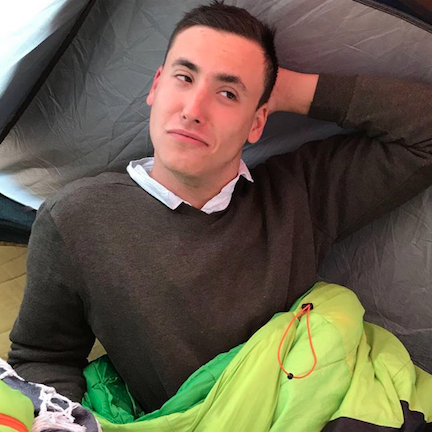

Mais pourquoi t'as fait ça ?
Ma grande soeur vivant aux Etats-Unis, je l'ai rejointe en octobre 2017 avec mes frères et soeurs pour passer 10 jours à la découverte des parcs nationaux de l'Ouest américiain. J'ai décidé de rester 40 jours de plus seul et de découvrir le coin. Pour la première fois de ma vie à vivre seul. Et pourtant je me suis rarement senti aussi entouré.
T'as jamais eu peur des Ours ?
Oh que si ! Dans Sequoia Park, une forêt de Séquoias géants, les Ours vivent dans leur habitat naturel et nous sommes les visiteurs. Partout des panneaux rappellent leur présence. Les américains disent ce qu'il ne faut pas faire "Ne gardez pas de nourriture", mais jamais ce qu'il faut faire "Si vous tombez nez à nez restez calmes et reculez". Je me suis levé de ma tente plus d'une fois pour vérifier que tout allait bien, mes sens en alerte se jouant complètement de moi. Et mes frères et soeurs aussi !
La Californie est sauvage et je n'avais encore jamais expérimenté cela. Il faut se méfier des ours, des serpents à sonnette, des requins, des pumas, des coyotes, de la sécheresse, des tremblements de terre et des incendies. On se sent vite perdu dans l'immensité de cette contrée.
Et pourquoi t'es revenu ?
J'ai été hébergé par une dame merveilleuse, Clare, dans sa propriété située dans une forêt près de Los Angeles. L'annonce disait "jardinage contre hébergement dans une communauté hippie paradisiaque". J'y ai rencontré dix jeunes voyageurs comme moi et toute la commuauté locale et je m'y sentais super bien, comme une deuxième maison. Mais au bout de 6 jours je n'ai pu m'empêcher de repartir sur la route. J'avais peu de temps et beaucoup de choses à voir. Puis je suis allé dans une autre famille à San Diego et rebelote !
Puis j'ai compris : si je restais plus longtemps, je prenais mes marques, je me sentais en confiance, c'était plus simple et je m'installais dans le confort, comme en vacances.
Ce que je voulais faire c'est voyager.
Baptiste Chebassier - codeur - intervieweur - interviewé
